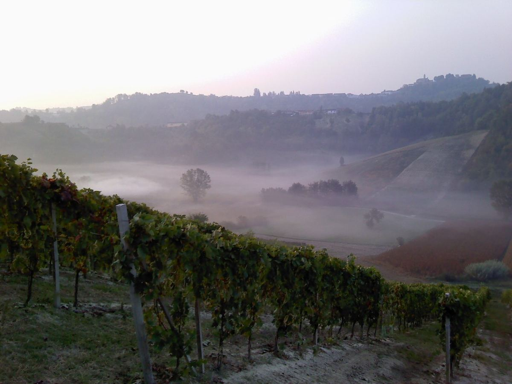

Italie
L'Italie est l'un des plus grands producteurs de vin du monde et cultive la vigne dans ses vingt régions, des Alpes à la Sicile. Elle se distingue par une extraordinaire richesse de cépages autochtones et par des vins aussi différents que le Barolo, le Chianti Classico, l'Amarone, le Prosecco ou les rouges volcaniques de l'Etna.

Histoire
La vigne est cultivée dans la péninsule italienne depuis des millénaires. Les colons grecs installés dans le sud à partir du VIIIe siècle av. J.-C. diffusèrent des techniques de culture et de vinification, et appelèrent une partie de ces terres Œnotrie, nom que l'on rattache généralement au vin. Avec Rome, la viticulture s'étendit à toute la péninsule et à une grande partie de l'empire, et des auteurs comme Caton, Varron, Columelle et Pline l'Ancien laissèrent des traités et des descriptions de vignobles et de vins célèbres, tel le Falerne de Campanie. Après la chute de l'Empire romain, monastères et villes maintinrent la culture de la vigne. En 1716, le grand-duc Côme III de Médicis délimita par édit les zones de production du Chianti, de Pomino, de Carmignano et du Valdarno di Sopra, l'une des premières délimitations légales de zones viticoles en Europe.
Au XIXe siècle, parallèlement à l'unification du pays, la viticulture et l'œnologie se modernisèrent dans des régions comme le Piémont et la Toscane. Le phylloxéra, les maladies de la vigne ainsi que les crises économiques et les guerres de la première moitié du XXe siècle freinèrent cet élan, et pendant des décennies une part importante de la production fut orientée vers le vin en vrac. La grande transformation qualitative s'amorça dans les années 1960 et 1970, avec une nouvelle législation sur les appellations, la rénovation des caves et des vignobles et une attention croissante portée aux cépages et aux terroirs locaux.
Géographie, climat et sols
L'Italie s'étire sur plus de mille kilomètres du nord au sud, entre les Alpes et le centre de la Méditerranée, et comprend les grandes îles de Sicile et de Sardaigne. Les Apennins parcourent la péninsule comme une colonne vertébrale, si bien qu'une grande partie du vignoble se trouve sur des collines et des coteaux. Le climat va du continental et alpin au nord, avec des hivers froids et de forts écarts de température, au méditerranéen chaud et sec du sud et des îles, où l'altitude et la proximité de la mer contribuent à tempérer la chaleur. Les sols sont très variés : marnes calcaires dans les Langhe, galestro et alberese en Toscane, sols volcaniques sur l'Etna, autour du Vésuve ou sur les collines de Soave, et dépôts morainiques d'origine glaciaire autour des lacs du nord, comme en Franciacorta.
Une grande diversité de cépages autochtones
Peu de pays ont conservé autant de cépages propres : le registre national des variétés de vigne en recense plusieurs centaines. Le sangiovese est le cépage rouge le plus planté et la base du Chianti, du Brunello di Montalcino et du Vino Nobile di Montepulciano. Le nebbiolo donne les grands rouges du Piémont et de la Valtellina lombarde, tandis que la barbera et le dolcetto sont les cépages du quotidien piémontais. La corvina règne en Vénétie, le montepulciano dans le centre adriatique, l'aglianico, le primitivo et le negroamaro dans le sud, le nero d'avola et le nerello mascalese en Sicile. Parmi les blancs se distinguent la glera du Prosecco, la garganega du Soave, le vermentino, le fiano, le greco, le verdicchio, l'arneis, le cortese et la famille des trebbiano, nom qui regroupe plusieurs variétés distinctes.
Le système DOC, DOCG et IGT
Un décret de 1963 créa les Denominazioni di Origine Controllata (DOC) ; les premières furent reconnues en 1966, à commencer par la Vernaccia di San Gimignano. La même loi prévoyait une catégorie supérieure, la Denominazione di Origine Controllata e Garantita (DOCG), dont les premières furent accordées en 1980 au Brunello di Montalcino, au Vino Nobile di Montepulciano, au Barolo et au Barbaresco. La loi 164 de 1992 réforma le système et introduisit l'Indicazione Geografica Tipica (IGT), catégorie couvrant des aires plus vastes avec des règles plus souples. Les DOCG sont soumises à des contrôles plus stricts et portent une bande de garantie numérotée sur le col de la bouteille. On compte aujourd'hui plus de soixante-dix DOCG et plus de trois cents DOC. Depuis la réforme européenne de 2009, DOC et DOCG relèvent de la catégorie communautaire AOP, et les IGT de l'IGP, même si les mentions traditionnelles restent en usage. Chaque appellation dispose d'un disciplinare qui fixe l'aire, les cépages, les rendements et l'élevage, ainsi que des mentions comme Classico (zone historique), Superiore ou Riserva.
Les Supertoscans
À la fin des années 1960 et dans les années 1970, des producteurs toscans commencèrent à élaborer des vins en marge des règles de l'époque, qui imposaient dans le Chianti l'emploi de raisins blancs et ne prévoyaient pas les cépages bordelais. Le Sassicaia de la Tenuta San Guido, à Bolgheri, issu de cabernet-sauvignon planté par Mario Incisa della Rocchetta, fut commercialisé à partir du millésime 1968 ; le Tignanello d'Antinori, à partir de 1971, associa le sangiovese au cabernet et à l'élevage en petits fûts. Vendus comme simples vins de table, mais à des prix élevés, ils furent surnommés Super Tuscans par la presse anglo-saxonne. Leur succès influença la création des IGT, l'extension de la DOC Bolgheri aux vins rouges et la réforme des règles du Chianti Classico.
Styles
La gamme de styles est immense : rouges de garde, blancs frais et aromatiques, effervescents en méthode Charmat comme le Prosecco ou l'Asti et en méthode traditionnelle comme le Franciacorta et le Trento, vins de raisins passerillés comme l'Amarone, le Recioto, le Vin Santo ou le Passito di Pantelleria, et vins mutés comme le Marsala.
Régions et appellations
Piémont
Région viticole · Le Piémont, au pied des Alpes dans le nord-ouest de l'Italie, est la terre du nebbiolo et de deux des rouges italiens les plus prestigieux, le Barolo et le Barbaresco. Il produit aussi de la barbera, du dolcetto, des blancs comme le Gavi et le Roero Arneis, ainsi que l'Asti et le Moscato d'Asti, très aromatiques.
Barolo
Appellation d'origine contrôlée et garantie (DOCG) · Le Barolo, élaboré exclusivement à partir de nebbiolo dans les Langhe piémontaises, est l'un des grands rouges de garde d'Italie. Il fut l'une des premières DOCG du pays, reconnue en 1980.
Barbaresco
Appellation d'origine contrôlée et garantie (DOCG) · Le Barbaresco est un rouge de nebbiolo des Langhe, produit sur une petite aire au nord-est d'Alba, au bord du Tanaro. Il partage cépage et prestige avec le Barolo, avec des règles d'élevage un peu plus courtes.
Toscane
Région viticole · La Toscane, au centre de l'Italie, est la grande terre du sangiovese, base du Chianti, du Brunello di Montalcino et du Vino Nobile di Montepulciano. Sur sa côte se sont aussi développés les vins de cépages bordelais connus sous le nom de Supertoscans.
Chianti Classico
Appellation d'origine contrôlée et garantie (DOCG) · Le Chianti Classico est la zone historique du Chianti, entre Florence et Sienne, et son vin est élaboré avec au moins 80 % de sangiovese. Son emblème est le coq noir et il constitue une DOCG autonome depuis 1996.
Brunello di Montalcino
Appellation d'origine contrôlée et garantie (DOCG) · Le Brunello di Montalcino est un rouge 100 % sangiovese produit sur la commune de Montalcino, dans la province de Sienne. Il est connu pour son long élevage obligatoire et son aptitude au vieillissement.
Bolgheri
Appellation d'origine contrôlée (DOC) · Bolgheri, sur la côte toscane dans la province de Livourne, est le berceau du Sassicaia et le principal foyer des rouges italiens de cépages bordelais. Sa DOC couvre surtout des assemblages de cabernet-sauvignon, de merlot et de cabernet franc.
Vénétie
Région viticole · La Vénétie, dans le nord-est de l'Italie, est l'une des régions les plus productrices de vin du pays. Elle est la patrie du Prosecco, du Soave, du Bardolino et des rouges de Valpolicella, dont l'Amarone.
Valpolicella
DOC et DOCG (Amarone et Recioto) · La Valpolicella, sur les collines au nord de Vérone, produit des rouges à base de corvina, du Valpolicella jeune au Ripasso et aux vins de raisins passerillés : l'Amarone sec et le Recioto doux, tous deux DOCG.
Prosecco
DOC et DOCG · Le Prosecco est un vin, généralement effervescent, élaboré surtout à partir du cépage glera en Vénétie et dans le Frioul-Vénétie Julienne. Son cœur historique se trouve sur les collines de Conegliano et de Valdobbiadene, classées en DOCG.
Soave
DOC et DOCG · Le Soave est l'un des blancs les plus connus d'Italie, élaboré principalement à partir de garganega sur les collines à l'est de Vérone. La zone produit aussi le Soave Superiore et le Recioto di Soave, doux, tous deux en DOCG.
Trentino-Alto Adige
Région viticole · Le Trentino-Alto Adige, région alpine la plus septentrionale d'Italie, réunit deux provinces autonomes à l'identité propre : Trente et Bolzano. Il est connu pour ses blancs de montagne, ses rouges de lagrein, de schiava et de teroldego et l'effervescent de méthode traditionnelle Trento DOC.
Franciacorta
Appellation d'origine contrôlée et garantie (DOCG) · La Franciacorta, dans la province lombarde de Brescia, près du lac d'Iseo, produit des effervescents de méthode traditionnelle à base de chardonnay et de pinot noir. En 1995, elle fut le premier effervescent italien à seconde fermentation en bouteille à obtenir la DOCG.
Sicile
Région viticole · La Sicile, plus grande île de la Méditerranée, possède l'une des plus vastes superficies de vignoble d'Italie. Sa production va des rouges de nero d'avola et des vins volcaniques de l'Etna au Marsala muté et aux vins doux de Pantelleria et des îles Éoliennes.
Etna
Appellation d'origine contrôlée (DOC) · La DOC Etna, sur les pentes du volcan sicilien, produit des rouges de nerello mascalese et des blancs de carricante issus de vignes d'altitude sur sols volcaniques. Reconnue en 1968, elle fut la première DOC de Sicile.
Campanie
Région viticole · La Campanie, dans le sud de l'Italie autour de Naples, était déjà à l'époque romaine l'une des zones viticoles les plus célèbres. Elle se distingue aujourd'hui par le Taurasi, rouge d'aglianico, et par des blancs comme le Fiano di Avellino et le Greco di Tufo.
Pouilles
Région viticole · Les Pouilles, le « talon » de la botte italienne, sont l'une des régions les plus productrices de vin d'Italie. Elles se distinguent par des rouges de primitivo, de negroamaro et de nero di troia et par une longue tradition de rosés.
Abruzzes
Région viticole · Les Abruzzes, entre les Apennins et la mer Adriatique, sont la terre du Montepulciano d'Abruzzo, l'un des rouges les plus répandus d'Italie. Elles produisent aussi le rosé Cerasuolo d'Abruzzo et des blancs de trebbiano, de pecorino et de passerina.
Langhe
Zone viticole et appellation d'origine contrôlée (DOC Langhe) · Les Langhe sont un territoire de collines du sud du Piémont, autour d'Alba, berceau du Barolo et du Barbaresco. Outre ces DOCG, la zone possède sa propre DOC, Langhe, qui couvre des rouges et des blancs issus de nombreux cépages.
Roero
Appellation d'origine contrôlée et garantie (DOCG) · Le Roero est une zone de collines sableuses sur la rive gauche du Tanaro, face aux Langhe, dans le Piémont. Sa DOCG couvre des rouges de nebbiolo et le blanc Roero Arneis.
Asti
Appellation d'origine contrôlée et garantie (DOCG Asti / Moscato d'Asti) · La DOCG Asti, dans le sud-est du Piémont, couvre les vins doux et aromatiques de moscato bianco : l'Asti mousseux et le délicat Moscato d'Asti, légèrement perlant et peu alcoolisé.
Gavi
Appellation d'origine contrôlée et garantie (DOCG) · Le Gavi, appelé aussi Cortese di Gavi, est une DOCG de vin blanc du sud-est du Piémont, dans la province d'Alexandrie, élaborée exclusivement à partir du cortese.
Lugana
Appellation d'origine contrôlée (DOC) · Le Lugana est une DOC de vin blanc sur la rive sud du lac de Garde, partagée entre la Lombardie et la Vénétie, élaborée à partir du cépage local turbiana sur des sols argileux d'origine glaciaire.
Bardolino
Appellation d'origine contrôlée (DOC) ; le Bardolino Superiore est une DOCG · Le Bardolino est une appellation de la rive orientale du lac de Garde, dans la province de Vérone, connue pour ses rouges légers et ses rosés Chiaretto élaborés surtout à partir de corvina et de rondinella.
Collio
Appellation d'origine contrôlée (DOC Collio Goriziano ou Collio) · Le Collio est une zone de collines de la province de Gorizia, dans le Frioul-Vénétie Julienne, le long de la frontière slovène, célèbre pour ses vins blancs issus de sols de marnes et de grès appelés ponca.
Friuli Colli Orientali
Appellation d'origine contrôlée (DOC), avec les DOCG Picolit, Ramandolo et Rosazzo sur son territoire · Friuli Colli Orientali, autrefois Colli Orientali del Friuli, est une DOC de collines de la province d'Udine, le long de la frontière slovène, connue pour ses blancs, pour des rouges autochtones comme le refosco et le schioppettino et pour le picolit liquoreux.
Vino Nobile di Montepulciano
Appellation d'origine contrôlée et garantie (DOCG) · Le Vino Nobile di Montepulciano est un rouge toscan de sangiovese, appelé ici prugnolo gentile, élaboré sur les collines qui entourent la ville de Montepulciano, dans la province de Sienne. Ce fut l'une des premières DOCG d'Italie.
Montefalco
Zone viticole avec la DOCG Montefalco Sagrantino et la DOC Montefalco · Montefalco, au centre de l'Ombrie, est la patrie du sagrantino, un cépage rouge aux tanins très marqués qui donne des rouges secs de longue garde et un vin doux traditionnel de raisins passerillés.
Maremma
Zone viticole avec la DOC Maremma Toscana et plusieurs DOC et DOCG, dont Morellino di Scansano · La Maremme est la bande côtière du sud de la Toscane, surtout dans la province de Grosseto. Ancienne terre de marais, elle est devenue l'une des zones viticoles les plus dynamiques de la région, avec des rouges de sangiovese et de cépages internationaux et des blancs de vermentino.
Verdicchio dei Castelli di Jesi
Appellation d'origine contrôlée (DOC) ; la Riserva est une DOCG (Castelli di Jesi Verdicchio Riserva) · Le Verdicchio dei Castelli di Jesi est l'appellation de vin blanc la plus connue des Marches. Il est élaboré à partir de verdicchio sur les collines de la province d'Ancône, autour de la ville de Jesi, et sa version Riserva a le statut de DOCG.
Taurasi
Appellation d'origine contrôlée et garantie (DOCG) · Le Taurasi est une DOCG de l'Irpinia, dans la province d'Avellino (Campanie), consacrée à des rouges d'aglianico très structurés et longuement élevés. Ce fut la première DOCG du sud de l'Italie.
Fiano di Avellino
Appellation d'origine contrôlée et garantie (DOCG) · Le Fiano di Avellino est une DOCG de vin blanc de l'Irpinia, dans la province d'Avellino (Campanie), élaborée à partir de fiano sur des collines au climat frais. Il donne des blancs aromatiques et structurés, capables d'évoluer pendant des années.
Greco di Tufo
Appellation d'origine contrôlée et garantie (DOCG) · Le Greco di Tufo est une DOCG de vin blanc de l'Irpinia, dans la province d'Avellino (Campanie), élaborée à partir du cépage greco autour du village de Tufo. Il donne des blancs bien structurés et d'une bonne acidité, y compris en version effervescente.
Aglianico del Vulture
Appellation d'origine contrôlée (DOC) ; l'Aglianico del Vulture Superiore est une DOCG · L'Aglianico del Vulture est le vin le plus connu de la Basilicate. Il est élaboré à partir d'aglianico sur les pentes du mont Vulture, un ancien volcan du nord de la région, et donne des rouges très structurés et d'une grande acidité.
Cirò
Appellation d'origine contrôlée (DOC) · Le Cirò est l'appellation la plus connue de Calabre. Il se trouve sur la côte ionienne de la province de Crotone et est célèbre surtout pour ses rouges et ses rosés de gaglioppo, ainsi que pour des blancs de greco bianco.
Sardaigne
Région viticole · La Sardaigne, deuxième île de la Méditerranée par sa superficie, possède une viticulture qui lui est propre, marquée par des cépages comme le cannonau, le vermentino et le carignano. Sa seule DOCG est le Vermentino di Gallura.
Valteline
Zone viticole avec les DOCG Valtellina Superiore et Sforzato di Valtellina et la DOC Rosso di Valtellina · La Valteline est une vallée alpine de Lombardie, dans la province de Sondrio, où le nebbiolo, appelé ici chiavennasca, est cultivé en terrasses sur le versant ensoleillé. Elle produit des rouges fins et le Sforzato, élaboré à partir de raisins passerillés.
Lambrusco d'Émilie
Ensemble d'appellations d'origine contrôlées (DOC) du lambrusco en Émilie-Romagne · Le lambrusco est le vin rouge mousseux ou pétillant typique de l'Émilie, surtout des provinces de Modène et de Reggio d'Émilie, où plusieurs DOC couvrent les différents types de lambrusco, secs ou plus ou moins doux.
Oltrepò Pavese
Zone viticole avec la DOC Oltrepò Pavese, d'autres DOC et la DOCG Oltrepò Pavese Metodo Classico · L'Oltrepò Pavese est la zone de collines de la province de Pavie située au sud du Pô, en Lombardie. C'est l'une des principales zones de pinot noir d'Italie, base de ses effervescents de méthode traditionnelle, et elle produit aussi des rouges de croatina et de barbera.
Frioul-Vénétie Julienne
Région viticole · Le Frioul-Vénétie Julienne, dans le nord-est de l'Italie, entre les Alpes, l'Adriatique, la Slovénie et l'Autriche, est l'une des grandes régions italiennes du vin blanc, avec des appellations de collines comme le Collio et Friuli Colli Orientali et de vastes DOC de plaine.